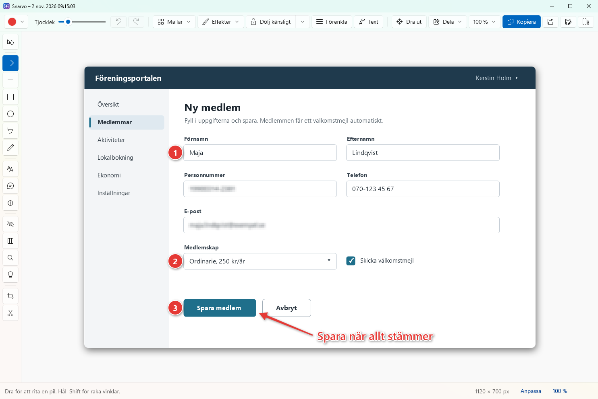
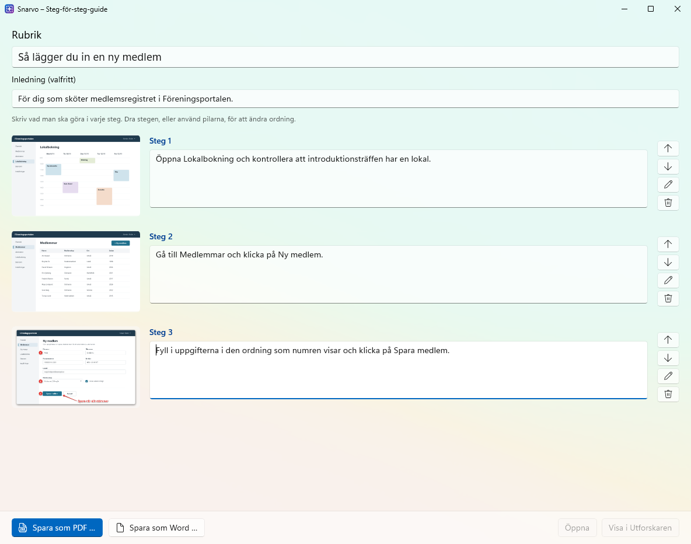
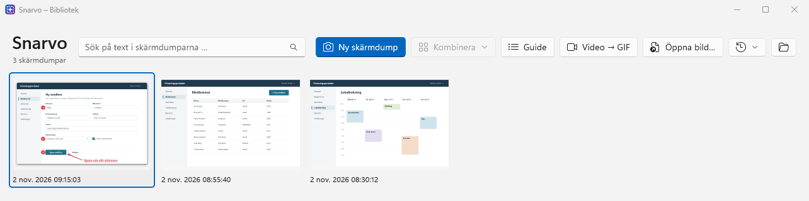

Skärmdumpar som går att förstå.
Snarvo är ett litet tillägg till Skärmklippverktyget i Windows. Ta en skärmdump som vanligt, sätt ut pilar och nummer, dölj personnummer och e-post, och skicka vidare. Utan konto, utan moln och utan kostnad.

Det som saknades i Skärmklippverktyget
Skärmklippverktyget tar fina skärmdumpar, men det är svårt att visa vad någon ska titta på. Snarvo lägger sig bredvid och tar emot bilden direkt när du har klippt.
- Pilar, nummer och pratbubblor
- Numrerade steg räknas om av sig själva när du tar bort eller lägger till.
- Dölj känsligt
- Hittar personnummer, e-post, telefonnummer och lösenord i bilden och täcker över dem helt. Ctrl+H
- Spela in steg
- Klicka dig igenom något som vanligt. Varje klick blir ett steg med bild, en ram runt det du klickade på och en färdig text.
- Dölj ett namn överallt
- Skriv ”Maja Lindqvist” så försvinner namnet på alla ställen där det står.
- Steg-för-steg-guider
- Spara som PDF, Word eller webbsida, med er egen logga och färg.
- Mjuk penna
- Rita en darrig ring och håll still en halv sekund, så blir den en perfekt cirkel.
- Sök i gamla skärmdumpar
- Texten i bilderna läses in, så du kan söka efter det som stod i dem.
- Klicka på ett ord
- Ett klick på ett ord stryker under, ramar in eller täcker just det ordet – utan att dra.
- Svenska eller engelska
- Appen, guiderna och installationen följer Windows språk. Mörkt läge följer också med.
- Dra ut och klistra in
- Dra bilden direkt till Teams eller Outlook, eller stäng editorn och klistra in.
Så funkar det
Inget nytt att lära sig. Du tar skärmdumpar på samma sätt som förut.
Klipp som vanligt
Tryck Win+Shift+S, eller Ctrl+Alt+S för att öppna editorn direkt.
Visa vad som gäller
Sätt ut nummer och pilar, och dölj det som inte ska delas.
Skicka vidare
Stäng fönstret, så ligger den färdiga bilden på urklippet och kan klistras in.


Gjord för att användas på jobbet
Skärmdumpar innehåller ofta saker som inte ska spridas. Därför är Snarvo byggd för att stanna på datorn.
- Ingen nätverkstrafikProgrammet har ingen kod för att skicka något någonstans. Ingen statistik, ingen inloggning.
- Privat lägeSkärmdumpar finns bara medan du arbetar med dem och raderas när fönstret stängs.
- Automatisk rensningLåt gamla skärmdumpar raderas efter 1, 7 eller 30 dagar.
- Ingen administratörsbehörighetSnarvo installeras bara för dig och körs med dina vanliga rättigheter. Det finns också som zip-fil utan installation.
- Textigenkänning i WindowsTexten i bilden läses av Windows inbyggda funktion, direkt på datorn.
- Öppen källkodAll kod går att läsa och granska. Licensen är EUPL-1.2, EU:s egen licens för öppen källkod.
- Styrs centraltGrupprinciper och Intune: lås privat läge, rensning, sätt att dölja och guidernas logga för hela organisationen.
- Täcker, suddar inteKänsligt döljs med heltäckande rutor. Suddig eller pixlad text kan ibland återskapas, det kan inte en täckt ruta.
IT-avdelningen hittar allt den behöver i säkerhetsbeskrivningen.
Ladda ner
Kör installationsprogrammet. Det tar några sekunder, kräver ingen administratörsbehörighet och lägger Snarvo i Start-menyn. Sedan ligger Snarvo i systemfältet, nere till höger. Du avinstallerar det som andra program, under Inställningar › Appar.
Windows kan visa ”Windows skyddade datorn”, eftersom Snarvo är nytt och ännu inte signerat. Klicka på Mer information och sedan Kör ändå.